Hint: Drag the pins to move cards, or tap a card for details.
Hint: Drag the pins to move cards, or tap a card for details.
POL-ITE Games 2025
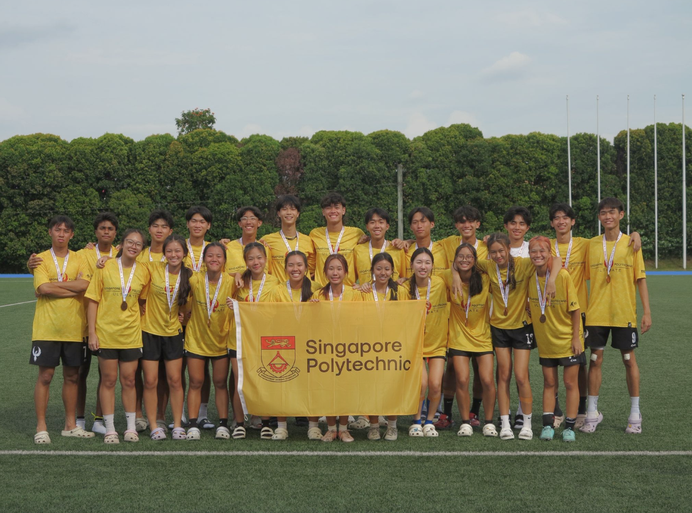
Singapore Polytechnic VS Nanyang Polytechnic
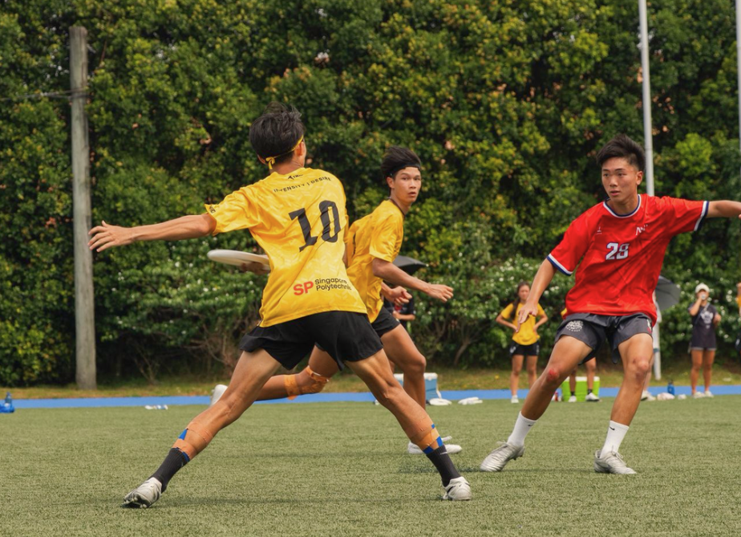
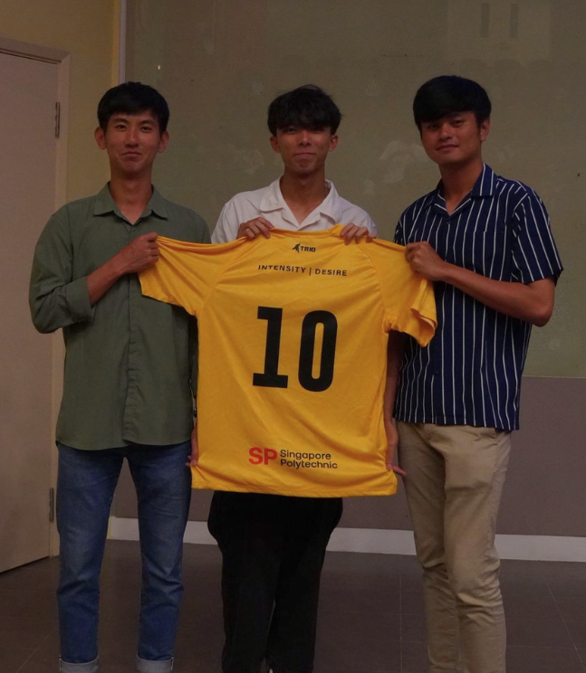
Jersey Presentation 2025
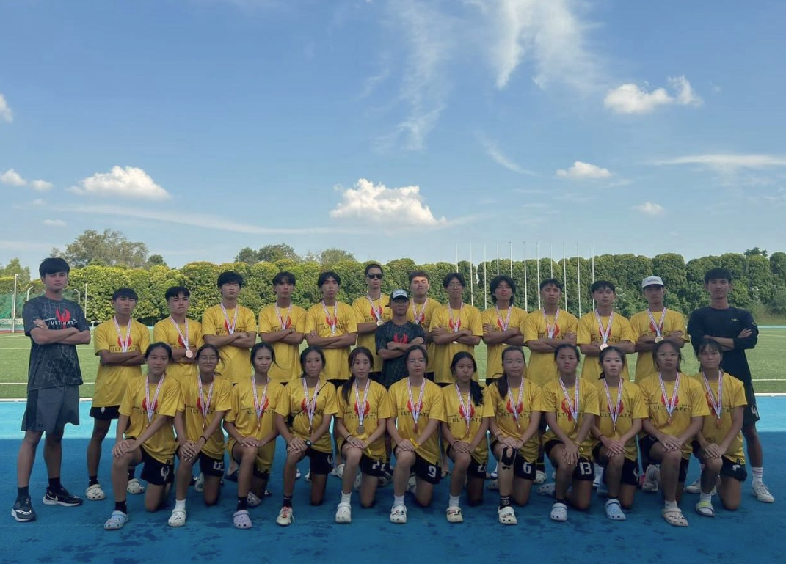
POL-ITE Games 2024
Role: School Representative
Year: 2023 - Present
Through my competition experiences in POL-ITE 2024 and 2025, as well as the Inter-Varsity POL-ITE Games 2025 and 2026, I developed a strong sense of purpose and agility, adapting quickly to high-pressure situations while staying focused on team goals. Competing at this level reinforced respect, both in how I supported teammates and opponents, and in maintaining long-term performance and wellbeing. Above all, these experiences shaped my integrity and pursuit of excellence, pushing me to uphold high standards, remain disciplined, and continuously strive for improvement both on and off the field.
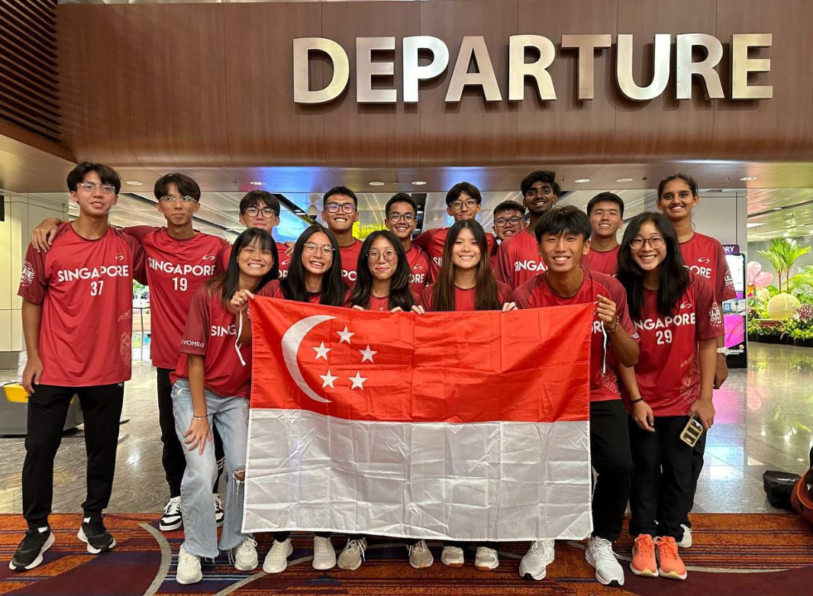

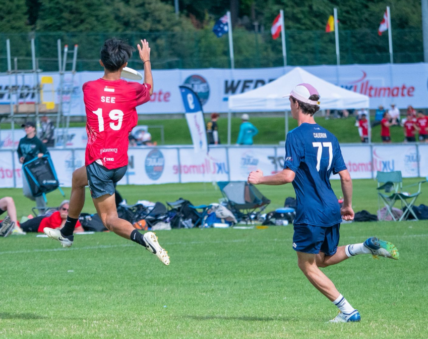
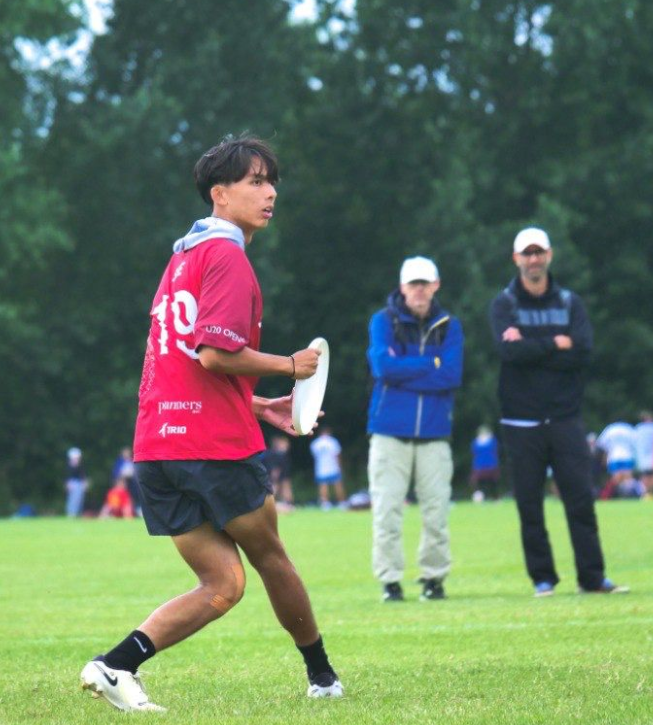
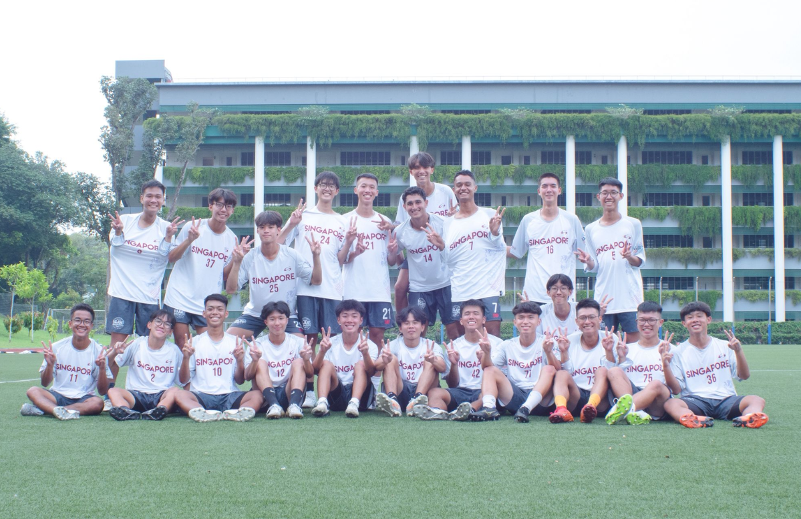
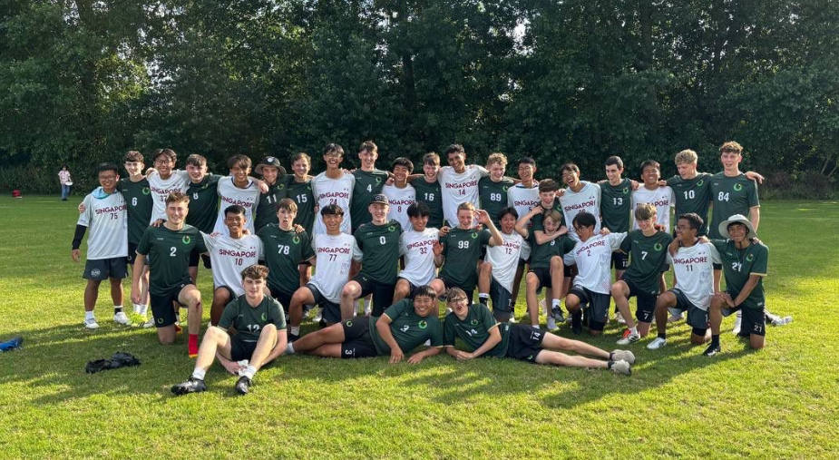
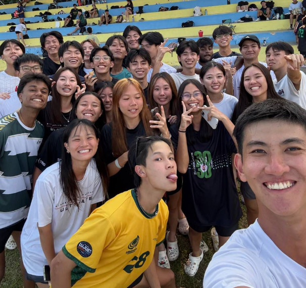
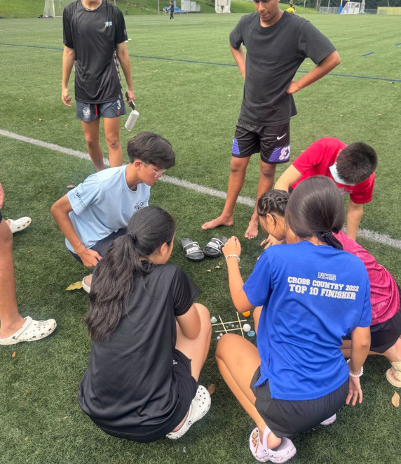
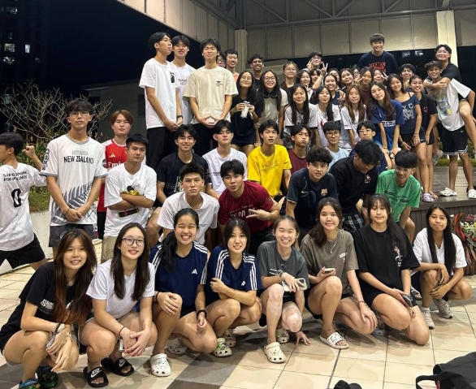
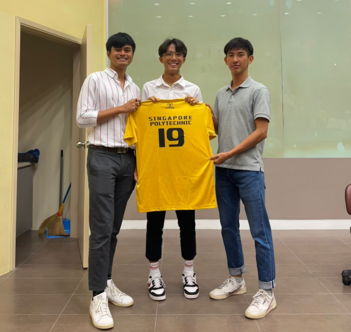
From 2023 to 2025, I served as an EXCO member and Vice-President of the Singapore Polytechnic Ultimate Club. I helped plan club activities, manage administrative operations, and organize events. Working with teammates to build an inclusive sports culture strengthened my communication, coordination, and strategic planning, while reinforcing responsibility, teamwork, and leading by example.